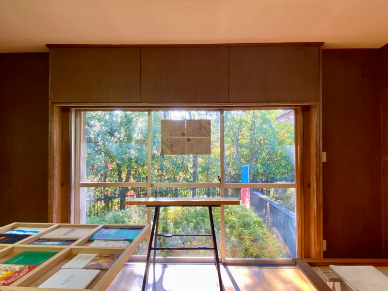
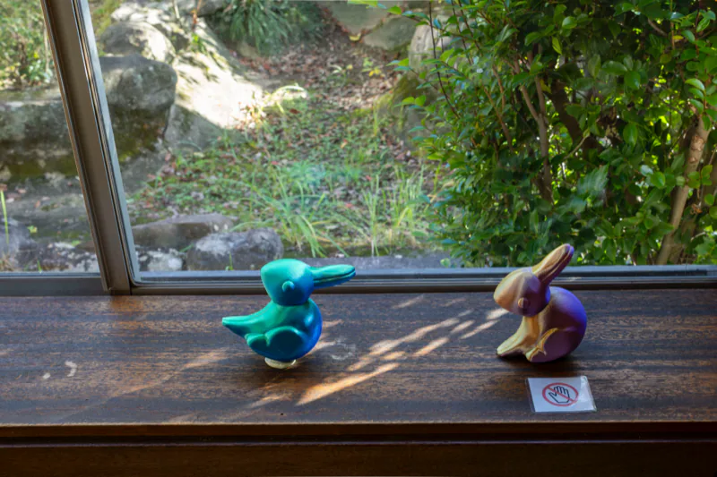

渡辺英治の展示Exhibits by Eiji Watanabe (neuroscientist)
管理棟Management Building
研究成果は裏に引っ込め、研究の入り口にある「なぜ」を並べた。作者に拘らず、できるだけインパクトのある錯視を集めた展示。それは、研究を始める前の科学者の追体験である。（渡辺英治「科学者と芸術家と子供の『なぜ』」より要旨）
16 項目の番号はカタログの展示リストに従う。会場に設けられた質問箱の抜粋はこのページの後半に。写真のない項目の画像（北岡明佳の錯視、Tumblr のドレス）はサイトに載せない。
- ①ビックリハウス（坂を登るボール）Funhouse (balls rolling uphill)
視覚情報と平衡感覚のズレにより、物理的に起こり得ない現象が起こっているかのように感じられる小屋。設計指導：渡辺英治／小屋制作：渡辺英司（唯一の共作）
- ②

② 変身立体（星丸） 二つの方向から見た時、まったく異なる形に見える立体錯視。発明：杉原厚吉（数学者）
- ③錯視画像スライドショーOptical illusion slide show
渡辺英治が選んだ120種類の錯視画像のプレゼンテーション。
- ④

④ 岡崎げんき館錯視 窓に取り付けられた箱を通して見える屋根の稜線が、切断されているようにズレて見える。ポッゲンドルフ錯視の一種で、視線を上下に動かすと効果が強まる。渡辺英治
- ⑤体験コーナー：ロトレリーフHands-on corner: Rotorelief
マルセル・デュシャンが自作した回転する造形物「ロトレリーフ」を手廻しで鑑賞する装置。回転することで前に突き出すような、あるいは奥に引き込むような矛盾した運動を知覚する。
- ⑥体験コーナー：ベンハムのコマHands-on corner: Benham’s Top
「ベンハムの独楽」とその仲間。白黒模様が回転することで色が知覚される。回転が逆転すると色の位置が逆転する。
- ⑦体験コーナー：変身立体（トランスフォーマー錯視）Hands-on corner: transforming three-dimensional objects (transformer illusion)
杉原厚吉による変身立体に、さらに色の変化を与えた錯視。杉原厚吉＋渡辺英治
- ⑧蛇の回転錯視Illusion of rotating snakes
静止画から回転する動きが知覚される錯視。渡辺英治の研究グループは、統合予測理論を組み込んだ AI に一人称視点の動画を学習させ、教えなくても人と似た回転知覚を再現することを示した。展示の計算機は会期中も学習を続けた。作：北岡明佳（知覚心理学者）。画像は作者のウェブサイトで
- ⑨錯視画像（ログビネンコ錯視、月の錯視、でっカー錯視）Optical illusion images (Logvinenko illusion, moon illusion, “big car” illusion)
明度が実際と異なって見えるログビネンコ錯視、地平線近くの月が大きく見える月の錯視、奥の車が大きく見えるでっカー錯視。でっカー錯視：北岡明佳
- ⑩変身立体（四角と丸）Transforming three-dimensional object (squares and circles)
二つの方向から見た時、まったく異なる形に見える立体錯視。発明：杉原厚吉（数学者）
- ⑪

⑪ 錯視立体（兎／家鴨） 兎にも家鴨にも見えるイラストを3D化。どちらにも見え、両方を同時には知覚できない点は、3Dになっても変わらない。
- ⑫エデンの海、錯視から解放された魚Sea of Eden, Fish Liberated from Optical Illusion
でっカー錯視では遠近感によって車の大きさが変わるが、遠近感の生じるレイヤーとは別のレイヤーにいる魚の大きさは一定になる。会期中に発明された新作錯視。渡辺英治。英司《エデンの海》への応答
- ⑬渡辺錯視Watanabe illusion
斜線を延長した到達位置に上下の差が生じる錯視。渡辺英治が最初に作った。来場者が到達予想位置にシールを貼る参加型展示。
- ⑭進化シミュレーター：トルシム惑星へEvolution simulator: Planet ToLSim
Tree of Life Simulation（ToLSim）。光からエネルギーを得る微生物が、突然変異や環境によって種々の生物へ進化する経過を演算する。研究：Lana Sinapayen、Hyoyeon Lee
- ⑮人によって見える色が異なる錯視Optical illusion of different perceived colors
2015年に Tumblr への投稿写真で有名になった錯視。ドレスの色が、白と金、青と黒などの異なる色に知覚される。
- ⑯蝶瞰図（エデンのトンネル）Tunnel of Eden
渡辺英司の作品《蝶瞰図》の蝶によって、休憩棟と管理棟をつなぐ道を示す。渡辺英治による渡辺英司へのオマージュ

{kind=link}
{kind=link}
渡辺英治質問箱Ask questions to Eiji!
カタログ p.13–15 から 5 組を抜粋。質問者の名前は伏せた。
- 問1
どうして目は見えるようになったんですか?来場者
どうして目が見えるようになったか?まだわからないナゾです。そのナゾがしりたくて先生はずっと研究しているよ。なんせ生きものが35オク年かけて発明した“目”。生きものはひとつの発明をするのにとても長い時間をかけてしこうさくごをするのです。そうかんたんには分からないのさ
- 問2
どうしてこういった分やのことをべんきょうをしようと思ったのですか来場者
朝目がさめるとカラフルですてきな世界がいきなりみえます。これってすごくふしぎなことなんです。このなぞを知りたくてこの分やの勉強(研究)しています。
- 問3
なぜ、こういう錯視のことについて勉強しようとおもったんですか!?来場者
錯視って「え!?なんで!?」ってなりますよね。でも多くの人は、そこでストップ。先生は「なんで!?」が残っているとねむれないので勉強をつづけています。錯視の向こうに“人ってなに!?”がみえてくると思います。
- 問4
どうしてしらないことをしってるの！来場者
あたらしいことがわかると世界がもっとおもしろくなるからだよ
- 問5
科学ってなんですか?来場者
「科学」は世界を正しく知ろうとする行為です。発見したことは世界中へ向けて公開し、正しいかどうかを調べます。“オープンマインド”が科学を支えています。
交差していないのに、交差している。